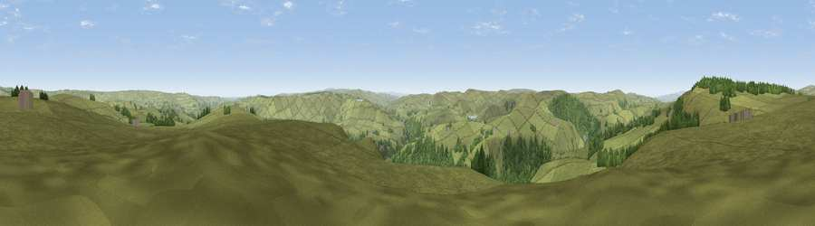

Viewpoint near Lydgate
#10316 in England · top 13% of its area beats it · near Lydgate · open accessWhere it is
The exact computed spot (SD 93175 26775). Click the marker for map links.
Public access: this spot lies on mapped open-access land (CRoW Act 2000) — you may roam here on foot. Computed from Natural England's CRoW access layer and OpenStreetMap rights of way — not the legal definitive map. Always verify locally.
The view, rendered

A 360° render of this exact spot computed from the terrain model, tree cover and land cover — summer colours, afternoon light, calibrated against photographs of famous viewpoints. Real trees, hedges and buildings will differ in detail.
The panorama
Grey silhouette: terrain skyline in each direction (720 bearings, Earth curvature and refraction included). Dashed green: skyline with trees (+15 m) and buildings (+8 m) as obstacles. Blue strip: how far the ground is visible on each bearing.
Where the view opens
Wedge length = distance to the farthest visible ground on that bearing (vegetation-aware). Rings at 10, 25 and 50 km.
What fills the view
91% grassland · 9% woodland
Angular shares of the visible panorama (visual magnitude), not map area. Landscape diversity 0.14 (0–1 Shannon).
Key numbers
More beautiful places nearby
The staircase of upgrades: each row has a higher view potential than everything closer. Driving times are estimates from straight-line distance, calibrated against real road routing — check an actual route before setting out.
| Place | Direction | Drive | Score |
|---|---|---|---|
| Hoof Stones Height | NW · 3 km | ~7 min | 64.0 |
| Viewpoint near Shawforth | SSW · 6 km | ~12 min | 66.1 |
| Thieveley Pike | W · 6 km | ~13 min | 66.2 |
| Viewpoint near Weir | W · 7 km | ~14 min | 66.8 |
| Lad Law (Boulsworth Hill) | N · 9 km | ~18 min | 71.5 |
| Viewpoint near Edenfield | SW · 14 km | ~25 min | 77.5 |
| Darwen Hill | WSW · 26 km | ~42 min | 80.7 |
| White Brow | WSW · 31 km | ~48 min | 82.9 |
53.73732, -2.10495 · source: screening · position refined by local search. Computed location — check access rights before visiting.